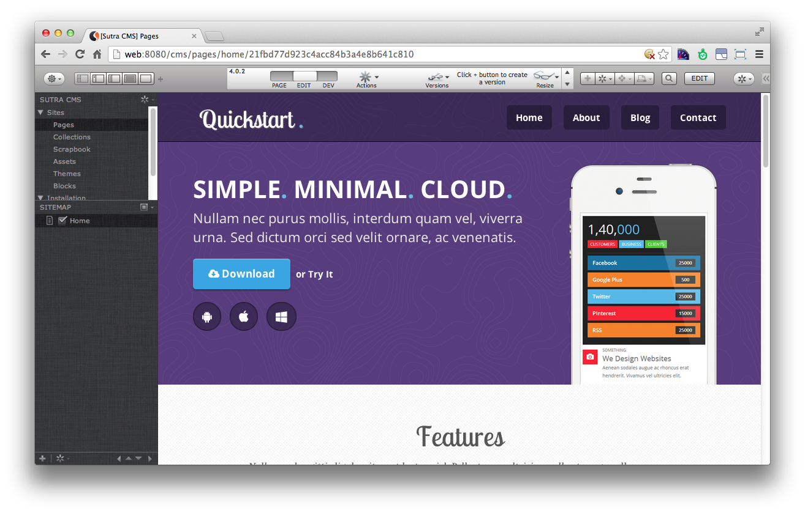

Sutra CMS

- As a CMS, it is easy for…
- As a Servoy-based Java Stack CMS, you get….
- Server-side coding in JavaScript
- Best debugger on the planet
- Multi-site and SaaS designed into the core
- Code sync with multiple developers
- Enterprise data, services and workflow integration
- Manage staging and deployment servers
- Scale up (and out)
- A no-brainer to integrate with Servoy solutions
- Make Servoy Web Client solutions look good
- When used with the Sutra ecosystem….
Sutra CMS owes much of its inspiration, structure, and concepts to Concrete5. We copied its view and controller organization, use most of the same terminology, implemented the “blocks” concept for creating custom functionality, and use a modified version of its in-page content editing approach.
To this we added multi-site and multi-lingual, brought content up to the same level as a page, created a powerful admin application, and baked in tight integration with Servoy’s web client.
And we wrote it all with Servoy. Which is, well…much more fun and faster to code with for server-side and business rule tasks than PHP is (ok, maybe we’re slightly biased!).
If you are a DIY (do-it-yourself) programmer looking for a cutting-edge CMS built on a technology stack that can do anything, you’ve come to the right place!
As a CMS, it is easy for…
Users to create and manage data
Site map tree. Code mode, GUI mode, and Real mode page editing (in-page editing). Page and content versioning. Translation workflow. Share content at the page level (languages), at the site level, at the install level, with various output platforms (ie, phone, tablets, structured documents). See all pages where specific data is being used. Site, page and data search. Unlimited page meta data for content management workflows.
Designers to template
Complete separation from the CMS—just add a few lines of code to a template file to flow content in. All template resources local to the template. Click one button to register or update a template with the CMS. Page versioning tracks which template was used so you can try out different templates easily.
Programmers to customize
Create a block for any content type (included block starter template). Extend current blocks with custom views. Clear sandboxing—extend core Sutra CMS modules without overwriting your code. Simple AJAX hooks. No PHP—code with Servoy. JQuery installed by default.
Marketers to promote and track
SEO: site defaults, page overrides, versioned with page versioning, by language. Auto site maps with page opt-out. Google analytics.
Administrators to manage
Rich GUI multi-site administration application.
As a Servoy-based Java Stack CMS, you get….
Server-side coding in JavaScript
Use the same language server-side that you use client-side. Or get low-level and write Java code directly (Servoy uses Rhino JavaScript).
Best debugger on the planet
Throw in a break point and find your bugs fast.
Multi-site and SaaS designed into the core
Run as many sites as your hardware can handle from one Servoy Server. Share data between all installed sites. Hooks for using Servoy’s record filtering to restrict user access. Use Servoy’s, your own, or Data Sutra’s access and control tools.
Code sync with multiple developers
Pick your flavor—CVS, SVN, Git, etc. Servoy hooks directly into any versioning system and provides a complete GUI interface.
Enterprise data, services and workflow integration
The enterprise understands Java. JDBC, SQL, triggers, webservices, scheduled actions—Servoy is the Swiss Army Knife of integrating disparate enterprise data, services and workflows.
Manage staging and deployment servers
Updating Servoy Servers with your latest build takes but a few clicks. If you mess something up, just roll back.
Scale up (and out)
Run many Servoy Servers in sync. Use various 3rd party web-caching solutions. All Sutra CMS content is stored as key/value pairs so theoretically you could use a NoSQL data storage with a little work.
A no-brainer to integrate with Servoy solutions
Install on the same Servoy Server and you’re good to go.
Make Servoy Web Client solutions look good
Real URL’s: links to each form and record, SEO friendly, browser history works. Use Servoy Web Client just for CRUD—leave the navigation up to Sutra CMS and surrounding design duties to real web designers.
When used with the Sutra ecosystem….
Ready to go with the Data Sutra application platform
Application level duties such as form and record navigation, searching, layout manager, group and user management, etc—are not written into Sutra CMS. Instead, Sutra CMS handles only CMS functionality and is meant to be driven by an application platform or frameworks. The big advantage here is that Sutra CMS can easily be integrated with other applications. When used with Data Sutra, you can install Sutra CMS and be ready to go right away.
Integrates seamlessly with other Sutras
Sutra CMS is just one of many applications in the Sutra ecosystem. Need a CMS, CRM and project management? Install them together and go. If you don’t see a solution listed, contact us. We’re likely to have code lying around and not packaged up yet that does what you need.
Fastest way to integrate business workflow functionality
Data Sutra is the fastest way to create and deploy your own solutions using Servoy. Need a custom content management workflow? Need to hook into your enterprise data? Need to expose an API? Write your own modules.